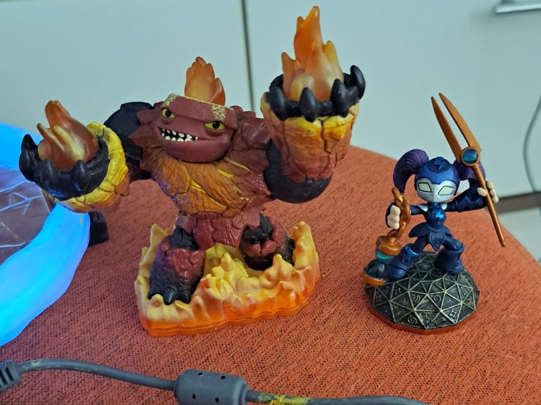
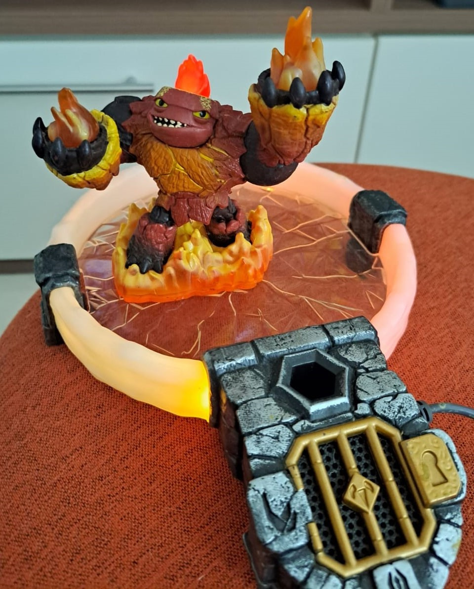

Skylanders é uma franquia de jogos lançada inicialmente
em 2011 com seu primeiro jogo sendo o Skylanders Spyro Adventures, sendo um derivado da franquia de jogos Spyro,
com sua principla mecânica sendo o portal e os bonecos que vinham junto com os jogo, no uqal você ligava o portal ao
console e colocava seus bonecos em cima dele, assim os bonecos apareciam no jogo e você conseguia jogar com eles, como
mostra o vídeo abaixo.
No primeiro jogo havia apenas skylanders básicos sem nenhuma mecânica extra, coisa que acabou mudando no jogos
posteriores da frânquia, então vamos explorar essas mecânicas?
Skylanders Giant
O segundo jogo da frânquia trouxe os Skylanders giants, que deram o nome ao jogo, sendo maiores com mais vida
mas mais lerdos que os normais, além de poderem realizar enterações especiais em seu jogo, como abrir baús específicos.

Boneco Giant comparado ao um normal

Além disso os Giants tem partes que brilham quando são colocados no portal
Gameplay de um Skylander padrão(esquerda) e de um Giant(direita)
Skylander Swap Force
O terceiro jogo trouxe os Swap Forces como mecânica principal, sendo um dos tipos de bonecos que mais se diferencia
dos outros, pois enquanto os Giants eram apenas Skylanders padrões só que maiores, os Swap Force podiam trocar as suas
partes de cima com a parte de baixo de outro Swap Force, assim misturando suas habilidades e tipos.